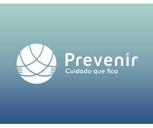

Sua saúde não deveria ter fila de espera.
O cartão Saúde Mater dá acesso direto à Mater Med, nossa própria clínica em Belo Horizonte. Sem rede terceirizada, sem fila infinita, sem consulta de 5 minutos. Você agenda, é atendido com calma e paga até 70% menos do que na consulta particular.
A maioria dos cartões de desconto te manda pra fila dos outros. O nosso não.
Cartão de desconto comum credencia uma rede de clínicas terceirizadas, cada uma com sua própria agenda e seu próprio ritmo. A Saúde Mater nasceu dentro da Mater Med, então quando você liga, fala direto com quem vai te atender.
- Rede de clínicas terceirizadas, sem padrão de atendimento
- Cada parceiro com sua própria fila e seu próprio critério
- Consulta corrida, focada em atender o máximo de gente
- Você paga a mensalidade e ainda espera semanas por vaga
- Acesso direto à Mater Med, nossa própria clínica em BH
- Um só time cuidando da sua agenda, sem repasse entre clínicas
- Foco em qualidade no atendimento, não em volume de consultas
- Você liga, marca e é atendido com muito mais agilidade
*Prazos de agendamento variam por especialidade e demanda do período. Consulte a disponibilidade de horários no momento do seu contato.
Descontos reais. Valores reais. Sem promessa vaga.
São descontos já oferecidos aos associados Saúde Mater. Os valores vigentes podem variar por período.*
*Exemplos de ofertas já divulgadas pela Saúde Mater. Confirme os valores e especialidades vigentes ao entrar em contato.
Três passos pra economizar na sua saúde.
Assine o cartão
Escolha o plano ideal pra você ou pra toda a família. O cadastro é rápido e sem burocracia.
Agende direto
Ligue ou mande mensagem direto pra Mater Med. Sem intermediários, sem repasse pra terceiros.
Pague menos
O desconto é aplicado na hora, em consultas, exames e procedimentos.
Da consulta de rotina ao exame de imagem, tudo em um só lugar.
Confira as especialidades e exames que você acessa com desconto usando o cartão Saúde Mater na Mater Med, em Belo Horizonte.
 Ressonância Magnética
Ressonância Magnética
Cuidado de verdade, sem pesar no bolso.
Agenda muito mais rápida
Você fala direto com a Mater Med. Sem depender da vaga de terceiros, sem repasse, sem esperar meses.
Qualidade acima de volume
Nossa consulta é pensada pra cuidar de você, não pra passar pro próximo o mais rápido possível.
Toda a família incluída
Um cartão, benefícios pra você e pra quem você ama.
Sem burocracia
Sem carência, sem letra miúda. O desconto é aplicado direto na consulta.
Quem usa o Saúde Mater recomenda.
Avaliações reais de clientes que confiam na Mater Med e no cartão Saúde Mater para cuidar da saúde.
"Profissionais de alta qualidade, recepcionistas atenciosas, preços acessíveis! Recomendo mil vezes."
"Consultei com a ginecologista Dra. Alessandra. Ótima médica. Sem contar com o atendimento de todas as recepcionistas. Excelente. Super indico."
"Parabéns pelo atendimento presencial e pelo WhatsApp. Tenho deficiência visual e sou tratada com muita empatia. Para todos os funcionários, em especial a Amanda. Super recomendo!"
Quem está ao lado da Saúde Mater.
Trabalhamos com parceiros reconhecidos para ampliar ainda mais os benefícios do seu cartão.



Perguntas frequentes.
Reunimos as dúvidas que mais chegam por aqui. Se a sua não estiver, é só mandar mensagem.
Os valores dos planos variam de acordo com o número de pessoas incluídas e os benefícios escolhidos. Entre em contato pelo WhatsApp ou telefone para receber a tabela de planos atualizada e escolher a melhor opção pra você e sua família.
Sim! O cartão Saúde Mater não tem carência. Após a adesão você já pode agendar sua consulta ou exame direto na Mater Med. Consulte a disponibilidade de agenda no momento do contato.
Não. O cartão Saúde Mater é um cartão de benefícios que garante descontos exclusivos em consultas e exames na Mater Med e parceiros conveniados. Ele não é um plano de saúde e não cobre internações ou emergências. É uma forma inteligente e acessível de cuidar da saúde sem pagar os altos preços da consulta particular.
Sim! A Mater Med fica na Rua Padre Rolim, 700, Santa Efigênia, Belo Horizonte, MG. O cartão Saúde Mater funciona dentro da própria clínica, então quando você entra em contato, fala diretamente com quem vai te atender. Você pode ir pessoalmente ou ligar pra agendar.
A Mater Med oferece diversas especialidades médicas, incluindo cardiologia, ginecologia, neurologia, endocrinologia, oftalmologia, proctologia, odontologia, audiologia, exames laboratoriais, ultrassom, raio-X, ressonância magnética, mamografia, colonoscopia e muito mais. Entre em contato para conferir a lista completa e disponibilidade por período.
Sim! O cartão Saúde Mater tem opções de planos individuais e familiares. É possível incluir dependentes para que toda a família aproveite os descontos. Fale com a gente para ver as opções de plano que melhor se encaixam na sua situação.
Simples: você entra em contato pelo WhatsApp ou telefone, informa sua especialidade e o nosso time verifica a disponibilidade de agenda direto na Mater Med. Nada de ser repassado pra terceiros ou ficar esperando resposta de clínica em clínica. É você e a gente, sem intermediários.
Vamos cuidar da sua saúde?
Fale com a gente agora. Nossa equipe está pronta pra apresentar os planos e tirar todas as suas dúvidas.
Falar no WhatsApp agoraOnde nos encontrar
Mater Med · Saúde Mater
Rua Padre Rolim, 700
Santa Efigênia, Belo Horizonte, MG
CEP 30130-090